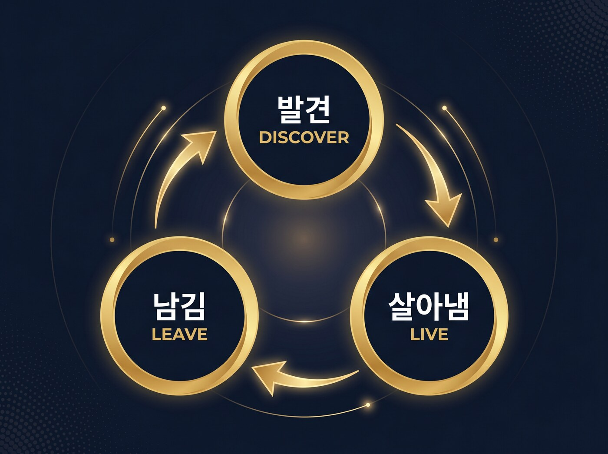
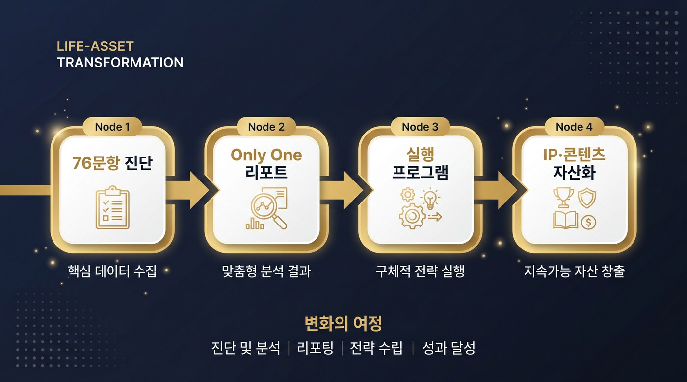
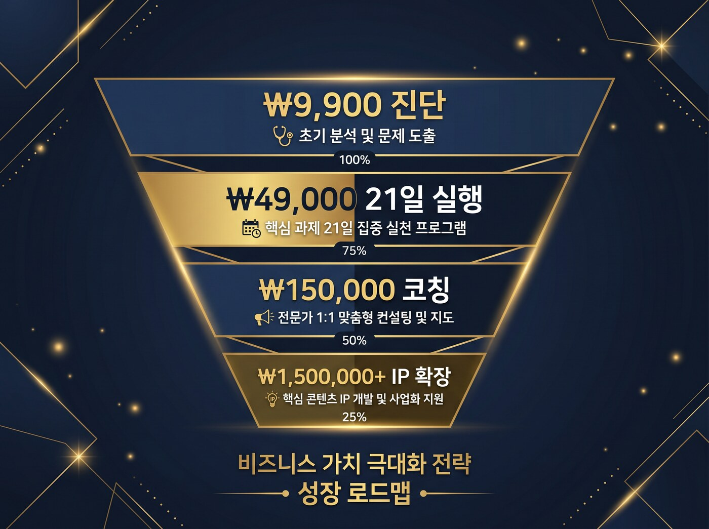

한 번뿐인 당신의 인생을 발견하고, 살아내고, 남기는 일.
그리고 그 삶을 인생 자산으로 바꾸는 완결된 여정.
"충성되고 지혜 있는 종이 되어 주인에게 그 집 사람들을 맡아
때를 따라 양식을 나눠 줄 자가 누구냐" — 마태복음 24:45 · North Star
의미의 발견에서 인생 자산화까지, 8개의 장
본 안내서의 모든 수치·문구는 내부 전략 자료(MaaS 선언서·브랜드 메시지북·시장조사 1~4단계·수익화 제안서 등)와 서비스 개발 이력(PR #1~#192)에 근거합니다. 추정치는 '시뮬레이션/예측'으로 명시합니다.
지난 20년, 세상은 자동화의 천국이자 방향의 사막이 되었다
지난 20년간 세상은 Software as a Service(SaaS)로 재편되었습니다. 모든 기업이 "더 빠르고, 더 효율적으로, 더 저렴하게"를 약속했고, 그 결과 세상은 자동화의 천국이 되었습니다. 그러나 동시에 우리는 방향의 사막에 도착했습니다.
AI는 인간의 일을 대신하지만,
인간의 이유(Why)를 대신하지는 못한다.
데이터가 판단을 대신하는 시대일수록, 사람들은 다시 "나는 왜 이 일을 하는가?"라는 질문으로 돌아갑니다. 이것은 더 이상 철학이 아닙니다. 글로벌 조사와 학술 연구들은 이미 '의미 경제(Meaning Economy)'가 산업의 새 중심축으로 자리 잡고 있음을 보여줍니다.
인생포트폴리오는 바로 이 전환점 위에 서 있습니다. 우리는 성격검사나 진로검사를 만들지 않습니다. 우리는 한 사람의 한 번뿐인 인생이 가볍지 않게 설계되도록, 그리고 그 삶이 끝내 자산으로 남도록 돕는 시스템을 만듭니다.

이 안내서는 그 여정의 전체 지도입니다. 의미 경제라는 시대의 흐름에서 출발해, 당신의 고유성을 어떻게 발견하고(PART 3), 어떻게 살아내며(PART 4), 어떻게 인생 자산으로 남기는지(PART 5), 그리고 그것이 어떻게 실제 수익과 제자화로 이어지는지(PART 6)를 근거와 함께 제시합니다.
인간이 다시 중심이 되는 서비스 구조 — Meaning-as-a-Service
이제 우리는 '기능(Function)'의 시대를 넘어, '의미(Meaning)'의 시대로 진입합니다. 그 새로운 질서의 이름이 바로 MaaS — Meaning as a Service입니다.
MaaS는 한 사람의 인생이 '가치 있게 실현되도록' 돕는 자기경영 생태계입니다. SaaS처럼 도구를 제공하지 않습니다. 대신 인간이 자신의 존재를 이해하고, 그 존재가 세상 속에서 의미 있게 실현되도록 구조(Structure)를 제공합니다.
"SaaS가 자동화를 만들었다면,
MaaS는 자율화를 만든다."
MaaS는 단순한 서비스 모델이 아니라 인간 운영체제(Human OS)입니다. 이 OS는 세 가지 핵심 프로세스로 작동합니다 — 이것이 곧 인생포트폴리오의 골격입니다.
자기이해
"나는 누구인가?"
정체성(Identity)을 구조화한다.
자기설계
"어떻게 살아야 하는가?"
방향(Direction)을 설계한다.
자기실행
"어떻게 실현할 것인가?"
실행(Execution)을 지속시킨다.
기술이 효율을 맡을 때, 인간은 의미를 창조합니다. 이것은 정서적 구호가 아니라 데이터로 입증된 시장 전환입니다.
흥미롭게도 Gen Z 응답자의 단 6%만이 '리더가 되는 것'을 최우선 목표로 삼았습니다. 이 세대에게 리더십은 '직급'이 아니라 '방향'의 문제입니다. '왜 일하는가'라는 질문이 이제 기업의 핵심 전략 변수로 부상하고 있습니다.
"AI가 세상을 자동화할 때,
인생포트폴리오는 사람을 자율화한다."
MaaS는 단지 새로운 산업이 아니라, 새로운 인간의 구조(New Human Framework)입니다. 경쟁 중심 사회는 사람을 효율로 나누지만, 의미 중심 사회는 사람을 고유성(Only One)으로 존중합니다. 인생포트폴리오는 이 철학을 실제로 작동하는 시스템으로 구현한 첫 서비스입니다.
▸ 다음 장에서는, 이 의미 경제의 흐름이 왜 지금 한국의 10~40대에게 가장 절박한 수요인지를 실제 시장 데이터로 살펴봅니다.
10~40대 전 생애주기를 관통하는 단 하나의 굶주림
인생포트폴리오는 특정 세대만의 서비스가 아닙니다. 10대부터 40대까지, 생애주기 전반을 겨냥합니다. 표면적으로 다른 고민처럼 보이지만, 이들은 본질적으로 하나의 페인포인트로 수렴합니다 — "자신의 고유한 사명과 정체성에 대한 굶주림."
30대의 번아웃(75.3%)은 20대(61.1%)·40대(60.5%)보다 압도적으로 높습니다. 즉 30대는 "자기계발 추천"을 검색하는 사람이 아니라 "내 인생 방향을 다시 짜야 한다"는 절박함을 가진 사람들입니다. 동시에 MBTI는 끝이 아니라 다리(bridge)입니다 — "MBTI 다음은 무엇인가"라는 검색 의도가 비어 있고, 그것이 우리가 채워야 할 가장 명확한 빈틈입니다.
하나의 진단 IP가 연령대에 따라 가격·언어·맥락만 변형되어 적용됩니다. 페인포인트는 다르되, '발견·살아냄·남김'의 해법은 동일합니다.
표면은 다르지만 본질은 하나다.
"나의 고유한 사명과 정체성에 대한 굶주림."
이 수렴 구조 덕분에 인생포트폴리오의 '19,900원 사명 진단' IP는 가격·언어·맥락만 변형되어 여러 시장에 재활용되는 고도의 자산 효율 구조를 가집니다. (→ 자세한 시장 확장은 PART 6에서 다룹니다.)
인생포트폴리오의 포지셔닝은 명확합니다. 유형 분류(Typology)가 끝이 아니라 시작입니다.
| 구분 | 유형론 (MBTI·에니어그램·DISC) | 인생포트폴리오 |
|---|---|---|
| 본질 | 나를 16/9가지 '유형'으로 분류 | 나를 80억 분의 1 '고유성'으로 설계 |
| 결과물 | 유형 코드 (재미·공유 중심) | Only One Report (사명·비전·전략) |
| 다음 단계 | 없음 (분류에서 종료) | 3주·3개월·1년 실행 프로그램으로 연결 |
| 종착점 | 자기 이해 | 자기 실행 → 인생 자산화 |
"MBTI는 끝이 아니라 다리(bridge)다.
'MBTI 다음은 무엇인가'라는 빈칸을, 우리가 채운다."
▸ 이 '진단 이후'의 설계가 바로 PART 4(살아냄)와 PART 5(남김)의 핵심입니다.
80억 분의 1, 단 하나뿐인 당신의 인생 설계도
모든 여정은 발견(Discovery)에서 시작됩니다. "나는 왜 이렇게 살아왔는가?"라는 질문에 답하며, 감정·가치·신념·강점 안에 숨어 있던 진짜 나를 인식하는 단계입니다.
"사람은 누구나 자신의 삶 안에
하나의 사명 코드(Mission Code)를 지니고 있습니다."
인생포트폴리오의 진단은 사람을 네 개의 축으로 입체적으로 읽어냅니다. 이것은 분류가 아니라 설계의 좌표입니다.
| 축 | 핵심 질문 | 목표 | 변화 키워드 |
|---|---|---|---|
| 자기이해 Self-Understanding | 나는 누구인가? | 정체성 발견 | 자각 · 통찰 · 감정인식 |
| 자기표현 Self-Expression | 나는 무엇을 위해 사는가? | 사명 언어화 | 진심 · 신념 · 소통 |
| 자기설계 Self-Design | 어떻게 살아야 하는가? | 비전·전략 수립 | 목표 · 실행계획 · 방향성 |
| 자기실행 Self-Execution | 어떻게 실현할 것인가? | 성취와 성장 | 지속성 · 성과 · 루틴 |
56문항 질문 풀에서 정제된 혼합형 검사지 v2(76문항)는 리커트형·선택형을 결합해 자기인식·가치·전환·감정·관계·실행 등 전 영역을 측정합니다. 응답은 진행 중 저장되어, 중간에 멈춰도 "진행 중인 검사 이어서"로 재진입할 수 있습니다.
진단이 끝나면, 오직 당신 한 사람만을 위한 Only One Report가 발급됩니다. 이 리포트는 표준 제작 규칙서(v3)에 따라 10개 섹션으로 동일한 품질을 보장하며, 고유성 80억 분의 1(1 / 8,000,000,000)을 지향합니다.
※ 실명·개인정보는 비공개 처리. 리포트 구조 이해를 위한 추상화 예시입니다.
유형: 원칙 중심의 분석적 설계자 — 신념과 통찰로 사람과 구조를 연결하는 전략형 리더
핵심 한 줄 정의: "신념을 기반으로 구조를 설계하고 사람의 변화를 이끄는 통찰형 전략가."
강점 TOP3: ① 원칙 기반 결단력 · ② 분석적 몰입력 · ③ 장기 흐름 설계력 | 성장 포인트: 감정 표현 확장 · 관계의 정서적 밀도
▸ 이렇게 발견된 '나'는, 다음 단계에서 실제로 살아낼 수 있는 실행 설계로 이어집니다.
인생포트폴리오는 "진단 → 리포트"에서 멈추지 않습니다. 발견된 고유성은 실행을 거쳐 끝내 인생 자산으로 전환됩니다. 이 끊김 없는 흐름이 우리의 차별점입니다.

| 단계 | 기능 | 산출물 |
|---|---|---|
| ① 진단 | 현재 상태·성향·가치·방향 분석 | 응답 데이터 |
| ② 분별 | 사명 문장 도출·비전 설정·전략 정의 | Only One Report |
| ③ 실행 | 3주/3개월/1년 계획·루틴 적용 | 맞춤 실행 프로그램 |
| ④ 기록 | 실행 로그·감정·선택·결과 기록 | 실행 로그 |
| ⑤ 검증 | 변화 확인·전후 비교·열매 판단 | 성과 추적 보드 |
| ⑥ IP화 | 개인 삶 → 문제 해결 구조·콘텐츠 변환 | 콘텐츠·프로그램 IP |
| ⑦ 확산 | 개인·공동체·기관 전달, 재사용 구조 | 제자화 양식 |
| ⑧ 수익 | 리포트·프로그램·라이선스 | 지속 수익 |
행동과학으로 사명을 일상에 새기다
리포트는 끝이 아닙니다. "방향은 아는데 실행이 안 되는" 가장 큰 병목을, 인생포트폴리오는 행동과학 기반 실행 설계로 돌파합니다. 사명을 '아는 것'에서 '사는 것'으로 옮기는 단계입니다.
모든 실행 프로그램은 실행의도(Implementation Intentions) 구조를 따릅니다. "~하겠다"는 다짐 대신, "만약 [상황]이면, 그때 [행동]한다"는 상황-행동 연결로 설계되어 실천율을 높입니다.
예시 (자기인식 모듈)
"만약 아침에 책상에 앉으면, 그때 오늘의 핵심 의도를 한 문장으로 기록한다."
발견된 유형에 맞춰 단계적 실행 프로그램이 제공됩니다. 작은 완수가 다음 구조를 여는 점진적 설계입니다.
| 기간 | 테마 | 핵심 활동 (예시) |
|---|---|---|
| 3주 루틴 형성 | 생각을 밖으로 꺼내기 → 관계 안에서 표현 확장 → 작은 완수로 연결 | 매일 핵심 의도 1문장 · 핵심 가치 3개 구체화 · 신뢰 대화 30분 · 첫 단계 실행 완료 |
| 3개월 구조화 | 나만의 철학 언어화 · 관계 깊이 루틴 정착 · 실제 역할 경험 확보 | A4 1장 철학 작성·공유 · 월 2회 깊은 대화 + 3줄 기록 |
| 1년 자산화 연결 | 지속 성과·정체성 안정 → 자산화 준비 | 반복 키워드·실행 패턴 정리 → 콘텐츠/IP 씨앗 발굴 |
실행 프로그램은 6개 영역으로 구성되어, 발견된 강점·성장포인트에 맞게 조합됩니다.
자기 관찰 저널 · 실수/성공 복기 · 멈춤-호흡-관찰 루틴
핵심 가치 3개 선언문 · 가치 기반 의사결정 훈련 · 가치 실천 프로젝트
회복 전략 카드 · 전환점 스토리 작성 · 신체 회복 루틴
감정 언어화 훈련 · 신뢰 대화 실습 · 예술 표현 과제
깊은 대화 루틴 · 피드백 주고받기 · 공동체 기여
첫 단계 완수 · 성과 추적 보드 · 다음 목표 연결
이 실행 설계 덕분에, 19,900원 진입 상품은 '나를 아는 검사'가 아니라 '내 방황을 끝내는 첫 3주 실행 설계도'로 재정의됩니다. 고객은 검사 직후 핵심 한 줄 정의 · 강점 TOP3 · 이번 주 첫 행동 3가지를 손에 쥡니다.
"방향은 아는데 실행이 안 되는 분들께,
첫 행동을 드립니다."
실행은 혼자일 때 무너집니다. 인생포트폴리오는 진단·결제·리포트를 검증한 사용자에게 21일 자가 점검 동행을 제공합니다. 점검 후에는 30분 실시간 채팅으로 동행자(코치) 톤의 피드백을 받습니다. 이것이 19,900원 진단과 고가 코칭 사이를 잇는 브리지(Bridge)입니다.
"진단은 입구일 뿐이며,
수익의 핵심은 실행 기본값(default) 설계에 있다."
▸ 이렇게 '살아낸' 삶은, 다음 장에서 인생 자산으로 남겨집니다 — 발견·살아냄의 결실이 비로소 거래 가능한 가치가 되는 순간입니다.
삶을 IP · 콘텐츠 · 역량으로 전환하다
발견하고 살아낸 삶은, 끝내 남겨져야 합니다. 인생포트폴리오의 마지막 단계는 한 사람의 고유한 경험·지식·역량을 거래 가능한 인생 자산(IP·콘텐츠)으로 전환하고, 그 구조가 다른 사람도 따라 살게 하는 제자화 양식이 되도록 만드는 것입니다.
2026년, AI 기업들은 인터넷의 고품질 텍스트를 거의 소진했습니다. 무단 수집의 시대는 저작권 소송으로 사실상 종말을 고했고, 이제 AI는 "돈을 내고 사람에게서 직접 데이터를 구하는" 길로 들어섰습니다. 이것이 일반인에게 열리는 시장입니다.
"당신의 지식, 경험, 목소리가 자산이다."
AI가 가장 배우기 어려운 것은, 당신의 고유한 인간적 경험이다.
인생포트폴리오의 실행 기록(로그·콘텐츠·통찰)은 그 자체로 자산화의 원재료입니다. 네 가지 방식으로 거래 가능한 자산이 됩니다.
글로 지식을 쌓는다. 아티클·뉴스레터를 누적해 하나의 데이터셋으로 구축.
목소리·영상으로 행동을 기록한다. 팟캐스트·영상으로 전문 해설을 남김.
데이터를 정리해 패키지로 만든다. 경험을 Q&A·지식 트리로 패키징.
소유권을 기록한다. 온체인 IP 등록으로 소유권 확보·수익 자동화.
실제 적용 사례(비식별)에서, 한 전략형 리더 유형의 사용자는 다음 구조로 자산화 경로를 설계받았습니다:
사명 도출 → 실행 기록 → 콘텐츠 제작 → 고객 유입 → 리포트 판매 → 실행 프로그램 → 수익 확장
"자기이해를 돕는 사람"이 아니라, "사명을 실행 구조로 바꾸어 실제 삶과 수익으로 연결하는 전략가"로 재포지셔닝됩니다. 고객의 변화와 수익이 동시에 발생하는 구조입니다.
"사명대로 살아낸 삶을 구조화하여,
다른 사람도 그 길을 따라 살게 만든다."
개인의 자산화는 거기서 끝나지 않습니다. 한 사람의 실행 구조는 재사용 가능한 양식이 되어 공동체·기관으로 확산됩니다. 이것이 인생포트폴리오가 지향하는 제자화 생태계 — 마태복음 24:45의 "때를 따라 양식을 나누어 줄" 구조의 실현입니다.
이제 우리는 인생포트폴리오의 전체 그림을 봅니다. 발견 → 살아냄 → 남김은 분리된 단계가 아니라, 서로를 강화하는 하나의 순환입니다.
| 동사 | 핵심 질문 | 산출 가치 |
|---|---|---|
| 발견 Discover | 나는 누구인가? | Only One Report (사명·비전) |
| 살아냄 Live | 나는 어떻게 사는가? | 실행 프로그램 (변화·성과) |
| 남김 Leave | 나는 무엇을 남기는가? | 인생 자산 (IP·콘텐츠·수익·제자화) |
▸ 다음 장에서는 이 가치 창출이 실제 수익 구조와 시장 비전으로 어떻게 환산되는지를 숫자로 제시합니다.
퍼널 · LTV · 연 7~10억 매출 시뮬레이션
인생포트폴리오의 수익은 고객의 변화와 함께 발생합니다. 19,900원의 낮은 허들로 시작해, 고객이 실제 가치를 경험하며 자연스럽게 다음 단계로 이동하는 가치 사슬형 퍼널입니다.

| 단계 | 가격 | 제공 가치 |
|---|---|---|
| ① 진입 진단 | ₩19,900 | 핵심 한 줄 정의 · 강점 TOP3 · 이번 주 첫 행동 3가지 |
| ② 브리지 오퍼 | ₩49,000~99,000 | 리포트 해설 VOD · 21일 실행 점검 · 그룹 줌 피드백 |
| ③ 고가 코칭 | ₩150,000~300,000 | 1:1 전문가 보정 · IP/콘텐츠 200개 기획 · 수익화 제안서 |
| ④ IP 확장 | ₩1,500,000+ | 브랜딩 콘텐츠 제작 지원 · 비즈니스 가이드 |
가장 검증된 핵심 모델은 ₩19,900 진단 + ₩50,000 다이어리의 2-Step 구조입니다. 21일 코칭을 포함한 풀 퍼널의 목표 LTV는 다음과 같습니다.
Go/No-Go 임계: D+30 ROAS≥350% · CVR≥3% → 통과 시 광고 스케일업 / D+60 월 800건 · 다이어리 5%+ → 통과 시 다이어리 본격화.
▸ 이 진단은 외부 컨설팅(O. 제안서)이 짚은 것으로, 본 안내서 자체가 '결과 중심 커뮤니케이션' 원칙을 적용해 작성되었습니다.
'19,900원 사명 진단' IP는 가격·언어·맥락만 변형되어 세 시장에 순차 진입합니다. 아래는 12개월 시뮬레이션(예측치)입니다.
| 시나리오 | 단가 구조 | 12M 목표 | 예상 매출(예측) | 난이도 |
|---|---|---|---|---|
| S1. AI 정체성 위기 디지털 캐시카우 (P1) | ARPU ₩19,900 | 월 5,000건 (누적 6만건) | 연 약 5.9억 | 中 |
| S2. 기독교 공동체 B2B (P2) | 교회당 50~300만원 | 연 30개 파트너십 | 연 0.45~1.5억 | 中高 |
| S3. 글로벌 디아스포라 (P3) | 단건 $14.99 (베타) | 베타 1,000건 | 약 1,200만 | 高 |
| 12개월 누적 추정 매출 | 7억 ~ 10억 원 (예측) | |||
"AI는 답을 알지만,
당신의 사명은 알지 못한다."
※ 매출 수치는 내부 전략 시뮬레이션(예측치)이며, 실제 성과는 시장·실행 변수에 따라 달라질 수 있습니다.
192회 진화한 서비스 — 진실성을 보증하는 운영의 성숙도
인생포트폴리오는 기획서로만 존재하는 서비스가 아닙니다. 실제로 운영되고, 끊임없이 개선되어 온 라이브 서비스입니다. 그 성숙도가 곧 이 안내서의 모든 약속을 보증합니다.
| 구간 | 핵심 성취 |
|---|---|
| PR #1~14 | 한/영 i18n 기반 + 결제(페이플·PayPal) 인프라 구축 |
| PR #15~32 | SEO·AEO·LLMO + GA4/GTM 분석 + 블로그 콘텐츠 + 성능 최적화 + 상표권 등록 |
| PR #33~48 | i18n 단일 진실원 정책 + 모바일 안정화 + 법적 준수(30일 파기·회원 탈퇴) + 데이터 무결성 |
| PR #87~98 | 21일 체크인 동행 프로그램(브리지 오퍼 실증) + 실시간 채팅 코칭 |
| PR #183~192 | 결제→검사 동선 UX 안전망 + 고객여정 8슬라이드 + 이미지 자산 보호 |
| 기준 | 본 안내서에서의 충족 근거 |
|---|---|
| ① 진실성 | 모든 수치·문구를 내부 자료(A~S)·PR 실측에서만 인용, 추정치는 '예측' 명시 |
| ② 시장성 | 번아웃 75.3% · MAU 2,162만 · 데이터시장 $48억→$226억 등 실데이터 |
| ③ 생산성 | 진단→리포트→실행→IP 자산화 8단계 파이프라인 제시 |
| ④ 수익성 | 4단계 퍼널 · LTV ₩99,700 · 연 7~10억 시뮬레이션 |
| ⑤ 신뢰성 | PR #1~192 진화 궤적 · 보안/법적준수 실증 |
| ⑥ 실행가능성 | if-then 실행의도 · 3주/3개월/1년 구체 루틴 |
| ⑦ 확장성 | 하나의 IP → 3대 신시장(가격·언어·맥락 변형) |
| ⑧ 윤리성 | 비식별 처리 · 개인정보 보호 · 사역적 진정성 |
인생포트폴리오는 당신의 사명을 현실로 만드는 설계도입니다.
그리고 그 설계도를 완성하는 사람은, 오직 '당신' 한 사람뿐입니다.
"충성되고 지혜 있는 종이 되어 주인에게 그 집 사람들을 맡아
때를 따라 양식을 나눠 줄 자가 누구냐" — 마태복음 24:45
lifeportfolio.co.kr · 파이스(Faise) 제작팀 · 공식 서비스 안내서 v1.0 (2026-06-10)
본 문서의 모든 데이터는 내부 전략 자료 및 서비스 개발 이력에 근거하며, 매출 등 미래 수치는 예측치입니다.